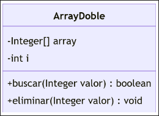
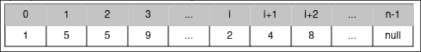
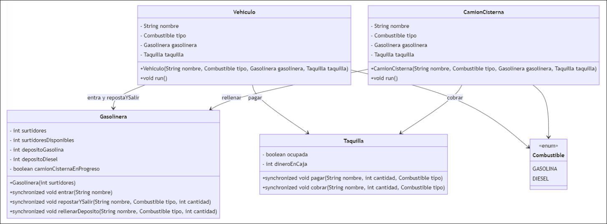

Examen 2024 — Extraordinario
Problema 1
Considere la clase ArrayDoble, con los atributos descritos en el diagrama de debajo. El atributo array es un array de enteros de dimensión n. Los elementos están separados en dos partes. Los i primeros elementos de este array son números impares ordenados de menor a mayor. Los últimos n-i elementos son números pares ordenados de menor a mayor. Puede haber posiciones vacías, cuyo valor será null, pero solo al final de cada una de las partes (par e impar). También puede haber valores repetidos. A continuación, se puede ver un ejemplo del contenido de este array:


Se pide, considerando como parcialmente válidas las implementaciones que apliquen simplificaciones y no cumplan todos los requisitos (p.e., que no consideren elementos duplicados):
- (a) (1.5 puntos) Implemente el método
buscar. Este método debe devolvertruecuando el valor buscado se encuentre en el array, yfalseen el resto de los casos. Su complejidad debe ser menor que \(O(n)\). Justifique su elección de algoritmo. Puede crear tantos métodos auxiliares como considere adecuados.
Mostrar solución
El método buscar aplica búsqueda binaria sobre la parte adecuada del array. En el caso peor, su complejidad será \(O(log(n))\).
public int posicion(Integer valor, int a, int z) {
while (a < z) {
int m = (a + z) / 2;
if (this.array[m] == null) {
z = m;
continue;
}
if (this.array[m] == valor) {
while (m > a && this.array[m - 1] == valor) {
m--;
}
return m;
}
if (this.array[m] < valor) {
a = m + 1;
} else {
z = m;
}
}
return a;
}
public boolean buscar(Integer valor) {
int a = 0;
int z = i;
if (valor % 2 == 0) {
a = i;
z = this.array.length;
}
int pos = this.posicion(valor, a, z);
if (pos < this.array.length) {
return this.array[pos] == valor;
}
return false;
}
- (b) (2.5 puntos) Implemente el método
eliminar. Tras ejecutar este método, ningún elemento del array debe coincidir con ese valor, y las condiciones del enunciado sobre el orden de los valores y la posición de los valoresnulldeben seguir cumpliéndose.
Mostrar solución
Hay al menos dos alternativas a la hora de eliminar un elemento impar. Pueden desplazarse todos los elementos a la derecha del borrado o sólo desplazarse los impares. En el primer caso, deberá decrementarse el valor de i, en el segundo el valor de i se mantiene.
public void eliminar(Integer valor) {
int a = 0;
int z = i;
if (valor % 2 == 0) {
a = i;
z = this.array.length;
}
int izquierda = this.posicion(valor, a, z);
if (izquierda >= z || this.array[izquierda] != valor) {
return;
}
int derecha = izquierda + 1;
while (derecha < z && valor == this.array[derecha]) {
derecha++;
}
while (derecha < z) {
this.array[izquierda++] = this.array[derecha++];
}
}
Problema 2
En este problema se trabajará con una tabla hash que almacena los nombres de los alumnos de un curso y sus respectivas notas. La tabla hash funciona con direccionamiento abierto. La resolución de las colisiones se realizará mediante el método de la exploración cuadrática. Esto significa que si al insertar un elemento en la tabla hash se produce una colisión, se elegirá una nueva posición mediante la fórmula \((posicion\) \(+ i^2)\%\)tabla.length, donde \(i\) es el número de intentos de reubicación en la tabla y la operación \(\%\) es el módulo que devuelve el resto de la división.
Se proporciona el siguiente código que realiza la acción de insertar un elemento en la tabla hash:
/**
* El método insertar trata de añadir un elemento a la tabla hash.
* Si al calcular la posición de insercción se produce una colisión, busca una
* nueva posición mediante exploración cuadrática.
* Si ya existía un elemento con la misma clave, actualiza su valor.
* Si no se puede insertar un elemento porque la tabla está llena, devolverá false.
* @param alumno Elemento que se insertará
* @return true si se ha podido insertar el elemento en la tabla
*/
public boolean insertar(ElementoDeTabla alumno) {
int pos = hash(alumno.getNombre());
int intento = 0;
while (intento < tabla.length) {
int posicionPrueba = (pos + intento * intento) % tabla.length;
if (tabla[posicionPrueba] == null) {
tabla[posicionPrueba] = alumno;
return true;
}
else if (tabla[posicionPrueba].getNombre().equals(alumno.getNombre())) {
tabla[posicionPrueba].setNota(alumno.getNota());
return true;
}
else {
intento++;
}
}
return false;
}

Se pide:
- (a) (1 punto) Suponga que se tiene una tabla hash como la descrita de tamaño 7. Inserte los siguientes elementos en la tabla hash en el orden que se presentan. Muestre el estado de la tabla después de cada inserción.
| Nombre | Alejandro | David | Diego | Fernando | Javier | Miguel |
|---|---|---|---|---|---|---|
| Nota | 10 | 10 | 10 | 10 | 10 | 10 |
| hash(nombre) | 2 | 5 | 5 | 1 | 6 | 6 |
Mostrar solución
- Alejandro se coloca sin colisiones en la posición
2; - David se coloca sin colisiones en la posición
5; - Diego colisiona en la posición
5, la siguiente prueba \((5 + 1*1)\% 7 = 6\) es válida; - Fernando se coloca sin colisiones en la posición
1; - Javier colisiona en la posición
6, la siguiente prueba \((6 + 1*1) \% 7 = 0\) es válida; - Miguel colisiona en la posición
6, la siguiente prueba \((6 + 1*1) \% 7 = 0\) también colisiona, la siguiente prueba \((6 + 2*2) \% 7 = 3\) es válida.

- (b) (1 punto) Razone la complejidad algorítmica de la operación de inserción en la tabla hash descrita. Suponga los casos en los que el número de elementos que contiene la tabla es:
- Mucho menor que el tamaño de la tabla;
- Similar al tamaño de la tabla.
Mostrar solución
Si el número de elementos que contiene la tabla es mucho menor que el tamaño de la tabla, la complejidad algorítmica es \(O(1)\) ya que se inserta en la primera posición disponible o tras pocas pruebas.
Si el número de elementos que contiene la tabla es similar al tamaño de la tabla, la complejidad algorítmica es \(O(n)\) ya que se debe recorrer la tabla completa para encontrar una posición disponible.
- (c) (2 puntos) Implemente el método
buscar(String nombre)que recibe el nombre de un alumno y retorna el objetoElementoDeTablacorrespondiente onullsi no lo encuentra.
Mostrar solución
public ElementoDeTabla buscar(String nombre) {
int pos = hash(nombre);
int intento = 0;
while (intento < tabla.length) {
int posicionPrueba = (pos + intento * intento) % tabla.length;
if (tabla[posicionPrueba] == null) {
break;
} else if (tabla[posicionPrueba].getNombre().equals(nombre)) {
return tabla[posicionPrueba];
} else {
intento++;
}
}
return null;
}
Suponga ahora que debido a la cantidad de elementos que se quieren almacenar, se decide cambiar el tipo de tabla hash a una tabla con direccionamiento cerrado. En este caso los elementos que colisionen se almacenarán en una lista que se encuentra en la posición que generó la colisión. Puede asumir que la tabla se ha inicializado con listas vacías en cada posición.
- (d) (2 puntos) Implemente el método
insertar(ElementoDeTabla alumno)que inserta un nuevo elemento en la tabla hash con direccionamiento cerrado. En caso de colisión, el nuevo elemento se debe agregar a la lista que se encuentra en la posición que generó la colisión. Si ya existe un elemento con el mismo nombre, debe reemplazar su valor.
Mostrar solución
public void insertar(ElementoDeTabla alumno) {
int pos = hash(alumno.getNombre());
for (ElementoDeTabla e : tabla[pos]) {
if (e.getNombre().equals(alumno.getNombre())) {
e.setNota(alumno.getNota());
return;
}
}
tabla[pos].add(alumno);
}
Problema 3
La pregunta consiste en simular la gestión de una gasolinera. La gasolinera tiene una cantidad limitada de surtidores y depósitos de diferentes tipos de combustibles (Gasolina y Diesel). Los vehículos y los camiones cisterna representan hebras que interactúan con la gasolinera y una taquilla de cobro/pago.
Monitor Gasolinera:
- Controla el acceso a los surtidores y depósitos de combustible;
- Se inicializa con un número de surtidores. Los depósitos se inicializan con 100 que será el tamaño máximo;
- Permite la entrada de vehículos si hay surtidores disponibles;
- Permite a los vehículos repostar si hay suficiente combustible en el depósito e inmediatamente después el vehículo sale de la gasolinera;
- Permite a un camión cisterna rellenar un depósito si el nivel está por debajo del 10%, pero solo puede haber un camión repostando.
Monitor Taquilla:
- Controla los pagos y cobros de la gasolinera y solo tiene una ventanilla para atender;
- Permite que un vehículo pague por el combustible repostado y permite que un camión cisterna cobre por el combustible rellenado. Actualizando el dinero en caja.
Comportamiento de la hebra Vehiculo:
- Cada vehículo tiene un nombre y un tipo de combustible que usa. Un vehículo:
- Entra en la gasolinera (si hay surtidores disponibles);
- Reposta una cantidad específica de combustible y sale inmediatamente después;
- Paga en la taquilla indicando el dinero a pagar.
Comportamiento de la hebra CamionCisterna (no es un Vehiculo):
- Cada camión cisterna tiene un nombre y un tipo de combustible que puede rellenar;
- Un camión cisterna:
- Rellena un depósito de la gasolinera (si el nivel de combustible está por debajo del 10%);
- Cobra en la taquilla indicando el dinero que debe cobrar.
Diagrama de clases:

Se pide:
Desarrolla el código del monitor Gasolinera:
- (a) (1 punto) Implementa el método
public synchronized void entrar(String nombre) throws InterruptedException
Mostrar solución
N/A
- (b) (1,5 puntos) Implementa el método
public synchronized void repostarYSalir(String nombre, Combustible tipo, int cantidad) throws InterruptedException
Mostrar solución
N/A
- (c) (1,5 puntos) Implementa el método
public synchronized void rellenarDeposito(String nombre, Combustible tipo, int cantidad) throws InterruptedException
Mostrar solución
N/A
Desarrolla el código del monitor Taquilla:
- (d) (0,5 puntos) Implementa el método
public synchronized void pagar(String nombre, int cantidad, Combustible tipo) throws InterruptedException
Mostrar solución
N/A
- (e) (0,5 puntos) Implementa el método
public synchronized void cobrar(String nombre, int cantidad, Combustible tipo) throws InterruptedException
Mostrar solución
N/A
Problema 4
Durante la construcción de una nueva ciudad, se está planificando el despliegue de la red de Internet. Para extender la red, se han empezado a instalar cables de red entre las casas, asegurando que, si una casa tiene conexión a Internet, todas las casas conectadas a ella también la tengan. La salida de la red de la ciudad se realiza con cables de fibra óptica que se conectan a una de las casas, dándole acceso a Internet.
Este escenario se modela como un grafo no dirigido, donde los nodos son las casas y las aristas son los cables de red. En el siguiente diagrama se puede ver cómo se han diseñado las clases que modelan el grafo adjunto.

- (a) (3 puntos) Por problemas de presupuesto, inicialmente solo se contará con un cable de fibra óptica para conectar la red de Internet a la ciudad. Este cable se debe conectar de manera que la cantidad de casas que tengan acceso a Internet sea la máxima posible. Implemente el método
nodoPreferido()en la claseGrafoCiudadque retorne el nodo al que se debe conectar la fibra óptica para que el mayor número de casas tenga conexión. Si hay varias opciones válidas, devuelva cualquiera de ellas.
Mostrar solución
En este apartado se debe buscar la componente conexa más grande del grafo y devolver cualquiera de los nodos que pertenezcan a esa componente. Una posible solución es:
public Nodo nodoPreferido() {
Set<Nodo> visitados = new HashSet<>();
int maxEncontrado = 0;
Nodo maxNodo = null;
for (Nodo n : casas) {
if (visitados.contains(n)) continue;
Set<Nodo> conectados = getConectados(n);
if (maxEncontrado < conectados.size()) {
maxEncontrado = conectados.size();
maxNodo = n;
}
visitados.addAll(conectados);
}
return maxNodo;
}
public Set<Nodo> getConectados(Nodo origen) {
Set<Nodo> visitados = new HashSet<>();
List<Nodo> porVisitar = new ArrayList<>();
visitados.add(origen);
porVisitar.add(origen);
while (!porVisitar.isEmpty()) {
Nodo n = porVisitar.remove(0);
for (Arista a : n.cablesConectados) {
Nodo vecino = a.getOtroNodo(n);
if (!visitados.contains(vecino)) {
visitados.add(vecino);
porVisitar.add(vecino);
}
}
}
return visitados;
}
- (b) (2 puntos) Cuando avanza la construcción de la ciudad, se decide poner nuevos cables de fibra óptica que traigan la conexión desde fuera de la ciudad. Los cables de fibra se conectarán a una sola casa, de la misma manera que en el apartado anterior. En esta ocasión, se necesita conocer el número mínimo de cables de fibra necesarios para dar conexión a todas las casas. Implemente el método
cablesMinimos()en la claseGrafoCiudadque retorne el número de cables necesarios para garantizar la conectividad de todas las casas.
Mostrar solución
En este apartado se debe calcular el número de componentes conexas que forman el grafo:
public int cablesMinimos() {
Set<Nodo> visitados = new HashSet();
int componentes = 0;
for (Nodo n : casas) {
if (visitados.contains(n)) continue;
visitados.addAll(getConectados(n));
componentes++;
}
return componentes;
}